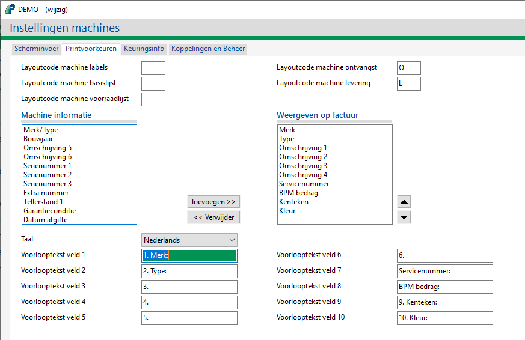

Dit is mogelijk als bij Instellingen machines, tabblad Printvoorkeuren, de voorlooptekst veld(en) 1 t/m x niet zijn ingevuld (in de betreffende taal).
- Controleer deze instelling.
-
Onderstaand zijn de teksten juist gevuld:

Opmerking: In bovenstaand voorbeeld zijn bij velden 1 t/m 10 de cijfers cijfer
1.etc. toegevoegd, alleen ter controle/verduidelijking. In de praktijk worden er geen cijfers gebruikt.Belangrijk: De voorloopcode 1 t/m X s.v.p. invullen, de zoek en vervangfunctie binnen de lopende orderteksten gaat er vanuit dat er een voorlooptekst is ingevuld.